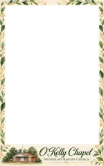
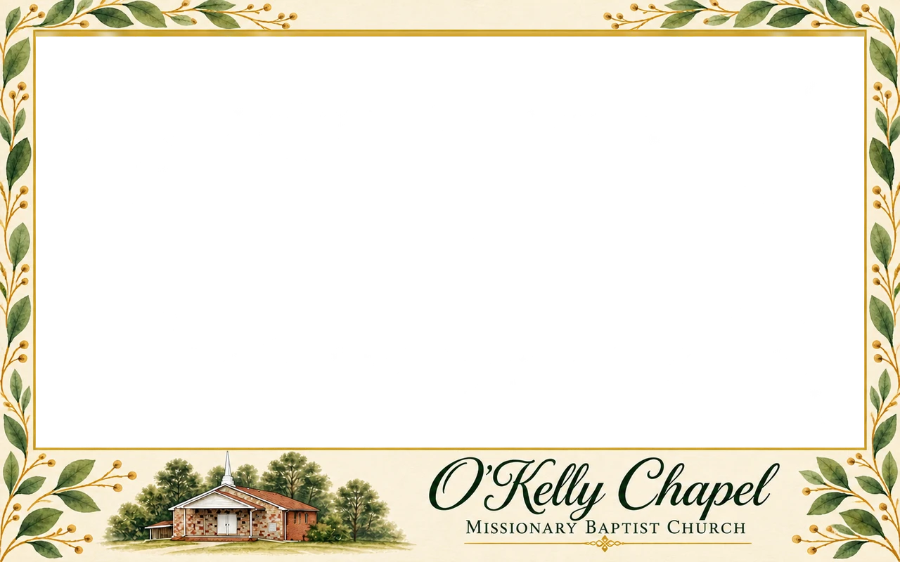

Our memories.Our church.Our story.
Equipping, Encouraging and Enhancing the lives of God’s people through the Word of God.
Add photoHave today’s tablet code or your church QR link ready.


Portrait & landscape options
Frame illustrations · your photo comes next
Chapel Garden · portrait & landscape